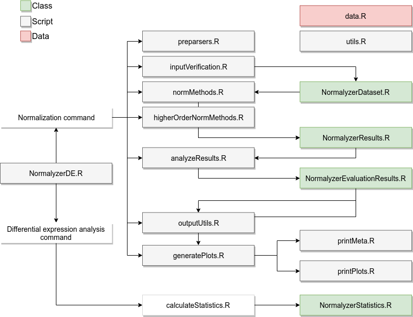

An online server running NormalyzerDE can be accessed at the following link:
https://quantitativeproteomics.org/normalyzerde
Alternatively:
https://normalyzerde.serve.scilifelab.se
NormalyzerDE is a software designed to ease the process of selecting an optimal normalization approach for your dataset and to perform subsequent differential expression analysis.
NormalyzerDE includes several normalization approaches, a empirical Bayes-based statistical approach implemented as part of Limma and a newly implemented retention-time segmented normalization approach inspired by previously outlined approaches. The emprical-based based statistics has been shown to increase sensitivity over ANOVA when detecting differentially expressed features.
Cite NormalyzerDE
NormalyzerDE is published here
Willforss, J., Chawade, A., Levander, F. NormalyzerDE: Online tool for improved normalization of omics expression data and high-sensitivity differential expression analysis. Journal of Proteome Research 2018, 10.1021/acs.jproteome.8b00523.
Installation
NormalyzerDE can be installed from Bioconductor, or directly from GitHub:
install.packages("devtools")
devtools::install_github("ComputationalProteomics/NormalyzerDE")Running NormalyzerDE - Minimal example
library(NormalyzerDE)Generate normalizations and normalization performance report.
normalyzer(jobName="rscript_norm", designPath="test_design.tsv", dataPath="test_data.tsv")Calculate differential expression between groups 1-2 and 1-3 (defined in the design matrix).
normalyzerDE(jobName="rscript_de", designPath="test_design.tsv", dataPath="test_data.tsv", comparisons=c("1-2", "1-3"))For more comprehensive documentation, check the Vignette at NormalyzerDE’s Bioconductor page. More information about required input formats is available here.
Executing from command line
If you want to run NormalyzerDE directly from the command line this is possible by executing it through the Rscript command.
Rscript -e 'NormalyzerDE::normalyzer(jobName="rscript_norm", designPath="test_design.tsv", dataPath="test_data.tsv")'
Rscript -e 'NormalyzerDE::normalyzerDE(jobName="rscript_de", designPath="test_design.tsv", dataPath="test_data.tsv", comparisons=c("1-2", "1-3"))'References
Bolstad, B. preprocessCore: A collection of pre-processing functions. 2018; https://github.com/bmbolstad/preprocessCore.
Gentleman, R. C. et al. Bioconductor: open software development for computational biology and bioinformatics. Genome Biol. 2004, 5, R80.
Huber, W.; von Heydebreck, A.; Sultmann, H.; Poustka, A.; Vingron, M. Variance stabilization applied to microarray data calibration and to the quantification of differential expression. Bioinformatics 2002, 18, S96–S104.
Kammers, K.; Cole, R. N.; Tiengwe, C.; Ruczinski, I. Detecting significant changes in protein abundance. EuPA Open Proteom. 2015, 7, 11-19.
Lyutvinskiy, Y.; Yang, H.; Rutishauser, D.; Zubarev, R. A. In Silico Instrumental Response Correction Improves Precision of Label-free Proteomics and Accuracy of Proteomics-based Predictive Models. Mol. Cell Proteomics 2013, 12, 2324–2331.
Ritchie, M. E.; Phipson, B.; Wu, D.; Hu, Y.; Law, C. W.; Shi, W.; Smyth, G. K. limma powers differential expression analyses for RNA-sequencing and microarray studies. Nucleic Acids Res. 2015, 43, e47.
van Ooijen, M. P.; Jong, V. L.; Eijkemans, M. J.; Heck, A. J.; Andeweg, A. C.; Binai, N. A.; van den Ham, H.-J. Identification of differentially expressed peptides in high-throughput proteomics data. Brief. Bioinform. 2017, 1–11.
Wolfgang, H. et al. Orchestrating high-throughput genomic analysis with Bioconductor. Nat. Methods 2015, 12, 115–121.
Code organization
NormalyzerDE consists of a number of scripts and classes. They are focused around two separate workflows. One is for normalizing and evaluating the normalizations. The second is for performing differential expression analysis. Classes are contained in scripts with the same name.

The standard workflow for the normalization is the following:
- The
normalyzerfunction in theNormalyzerDE.Rscript is called, starting the process. - If applicable (that is, input is in Proteois or MaxQuant format), the dataset is preprocessed into the standard format using code in
preparsers.R. - The input is verified to capture standard errors early on using code in
inputVerification.R. This results in an instance of theNormalyzerDatasetclass. - The data is normalized using several normalization methods present in
normMethods.R. This yields an instance ofNormalyzerResultswhich links to the originalNormalyzerDatasetinstance and also contains all the resulting normalized datasets. - If specified (and if a column with retention time values is present) retention-time segmented approaches are performed by applying normalizations from
normMethods.Rover retention time using functions present inhigherOrderNormMethods.R. - The results are analyzed using functions present in
analyzeResults.R. This yields an instance ofNormalyzerEvaluationResultscontaining the evaluation results. This instance is attached to theNormalyzerResultsobject. - The final results are sent to
outputUtils.Rwhere the normalizations are written to an output directory, and togeneratePlots.Rwhich contains visualizations for the performance measures. It also uses code inprintMeta.RandprintPlots.Rto output the results in a desired format.
When a normalized matrix is selected the analysis proceeds to the statistical analysis.
- The
normalyzerdefunction in theNormalyzerDE.Rscript is called starting the differential expression analysis pipeline. - An instance of
NormalyzerStatisticsis prepared containing the input data. - Code in the
calculateStatistics.Rscript is used to calculate the statistical contrasts. The results are attached to theNormalyzerStatisticsobject. - The resulting statistics are used to generate a report and an annotated output matrix where key statistical measures are attached to the original matrix.